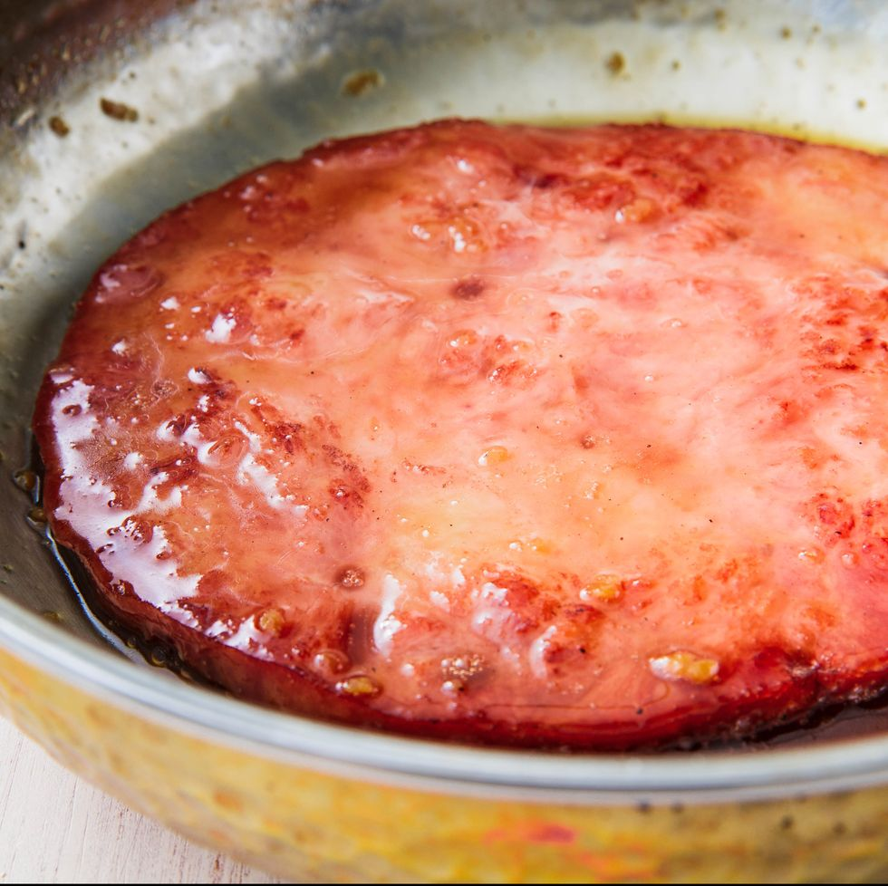

Glazed Ham Steak

Description
Spiral hams are delicious, but they yield so much meat. When you're craving
ham, but don't want to fuss with an entire one, ham steaks are the way to go!
This is also gread for a holiday celebration with only a handful of people.
Instead of roasting and glazing a whole ham, just make everyone their own
perfectly cooked, savory-sweet steak.
Ingredients
- 1/4 cup maple syrup
- 2 tablespoons packed brown sugar
- 1 tablespoon apple cider vinegar
- 1 tablespoon Dijon mustard
- 5 tablespoons extra-virgin olive oil, divided
- 6 oz. Tuscan kale, stems removed, leaves torn into 2-inch pieces
- 3/4 c. cooked black eyed peas
- 1 cooked ham steak, about 1 lb
Steps
- In a small bowl, whisk maple syrup, brown sugar, vinegar and mustard.
- In a medium skillet over medium-high heat, heat 1 tablespoon oil. Add kale
and cook, tossing until wilted, about 4 minutes. Add black-eyed peas and
and cook, tossing until heate through, 1 minute. Transfer mixture to a plate
and return skillet to medium-high.
-
Heat remaining 2 teaspoons oil. Add ham steak and cook until golden, about 4
minutes per side.
-
Pour maple syrup mixture into pan and cook, turning ham a few times until
fully coated in glaze. Return kale mixture to pan and toss to coat with any
glaze remaining in skillet.